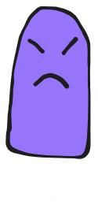
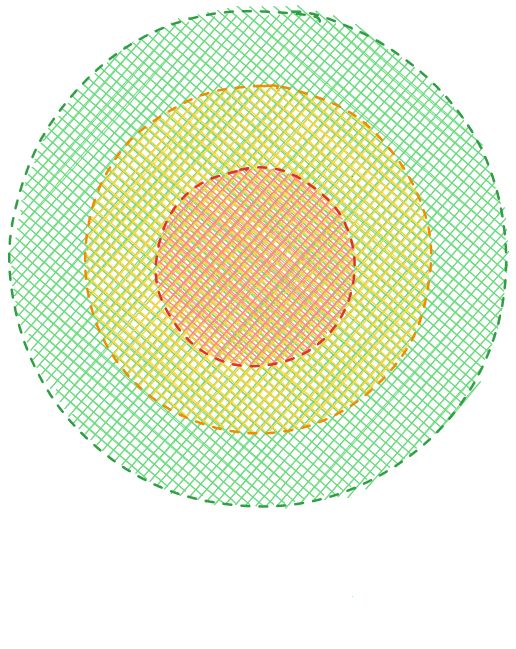

Nirvana is a fast-fps / bullet-hell game.
It was a graduation group project, we were 10 working on it.

Here, I will show the main lines of the enemies behavior of the game.
There is a lot to cover regarding the subject and I don't have the skills to explain clearly.
I'll try to explain as best as I can through 4 major points.
Balancing: individual-behavior | synchronization | shoot | placement
I had to find a single solution that solve those 4 "problems".
There is a lot to cover regarding the subject and I don't have the skills to explain clearly.
I'll try to explain as best as I can through 4 major points.
Balancing: individual-behavior | synchronization | shoot | placement
I had to find a single solution that solve those 4 "problems".
Solution:
Managing 3 "zones" around the player du joueur.
The enemies will stand to a determined average distance from the player.



We can choose the number of enemies in the two first zones and the others will go into the last zone.
The enemy → zone linking choice is done by sorting their current distance to the player.

Allocating a zone to an enemy is done by modifying this enemy's range.
Because in order to replace themselves, enemies move toward a position where they get a better range ; they get progressively closer to the desired zone.

The enemy → zone linking choice is done by sorting their current distance to the player.
Allocating a zone to an enemy is done by modifying this enemy's range.
Because in order to replace themselves, enemies move toward a position where they get a better range ; they get progressively closer to the desired zone.
Now that the enemies are sorted, it is very much simpler to have the control on the way they shoot.
To distinguish the patterns from each other, we just have to limit the shots so that there is inly one at a time per zone.
To pace the shots, we can alternate the current shooting zone.
And to diversify the battles, we can modify the delay between each shots and the alternating zone order.


To distinguish the patterns from each other, we just have to limit the shots so that there is inly one at a time per zone.
To pace the shots, we can alternate the current shooting zone.
And to diversify the battles, we can modify the delay between each shots and the alternating zone order.
Conclusion
• Placement :
Well spreaded around the player. The fact that they focus on getting a good range, AND the secondary parameter of trying to spread out, adds a natural feel to the placement behavior.
• Shoot :
Distinguishable (suited for bullet-hell), and the pace can vary to feels natural too.
• Synchronization :
Orchestrated shots, enemies are positionning themselves where there is the least enemy density.
• Individual-Behavior :
Frequent shoot opportunities, autonomous movements not constrained by other actions (even by shooting). They also have a "flee" action wich is independent of other enemies.